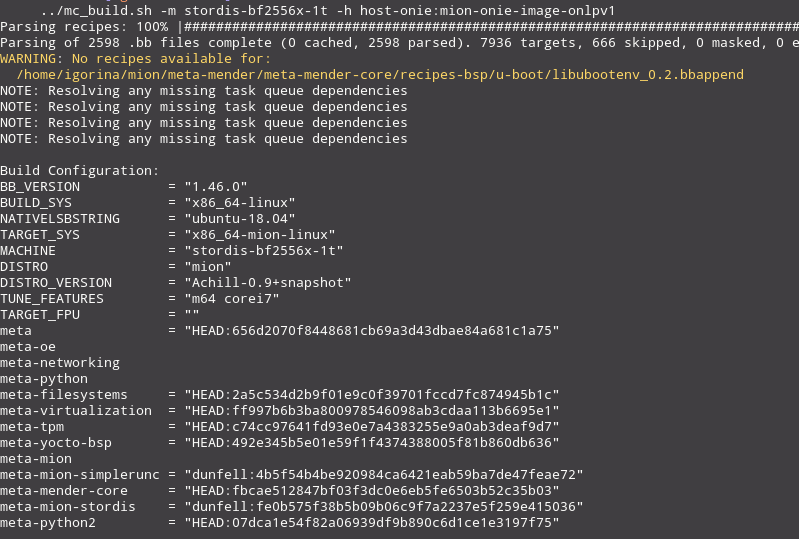
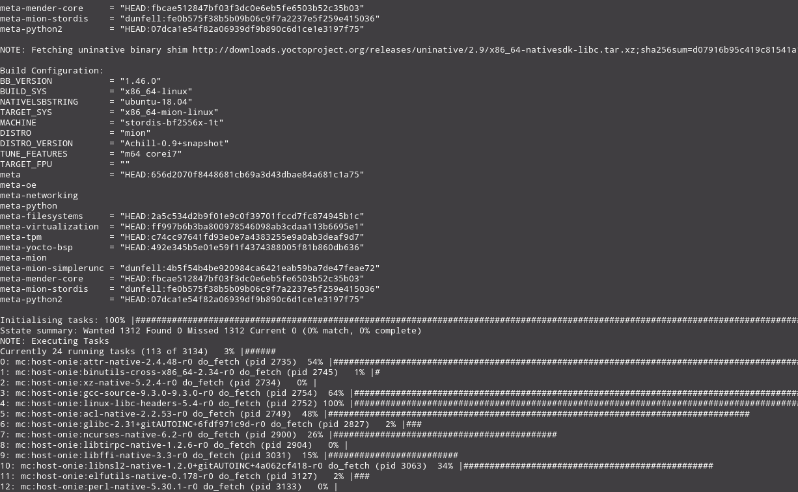
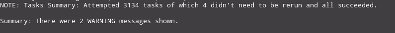

Getting Started Guide
Pre-Requirements
This documentation is for dev/latest which uses Yocto Project Dunfell
If you are new to Yocto Project development, check out Overview and Concepts and the Quick Build guide to set up your build host and become familiar with the workflow. We provide a quick overview below. Already familiar and want to get started building mion? Then checkout the mion README for a quick-start guide.
Build Host
Whether on a laptop or a high-powered build server, make sure that...
- You have 50 GB available
Why so much when the resulting image is so tiny? Think of it as a small cake; Even if the end result can fit in a small box, you will still need a whole kitchen in order to bake it.
-
git 1.8.3.1 or greater
-
tar 1.28 or greater
-
python 3.5.0 or greater
-
gcc 5.0 or greater
Ubuntu (16.04 -18.04) and Debian GNU/Linux (8.x-10.x)
sudo apt-get install gawk wget git-core diffstat unzip texinfo gcc-multilib \
build-essential chrpath socat cpio python3 python3-pip python3-pexpect \
xz-utils debianutils iputils-ping python3-git python3-jinja2 libegl1-mesa \
libsdl1.2-dev pylint3 xterm
for Ubuntu, make sure that you are using bash rather than dash:
sudo dpkg-reconfigure dashselectNoto use bash.
Fedora (28-32)
sudo dnf install gawk make wget tar bzip2 gzip python3 unzip perl patch \
diffutils diffstat git cpp gcc gcc-c++ glibc-devel texinfo chrpath \
ccache perl-Data-Dumper perl-Text-ParseWords perl-Thread-Queue perl-bignum\
socat python3-pexpect findutils which file cpio python python3-pip xz \
python3-GitPython python3-jinja2 SDL-devel xterm rpcgen
CentOS(7.x)
$ sudo yum install -y epel-release
$ sudo yum makecache
$ sudo yum install gawk make wget tar bzip2 gzip python3 unzip perl patch \
diffutils diffstat git cpp gcc gcc-c++ glibc-devel texinfo chrpath socat \
perl-Data-Dumper perl-Text-ParseWords perl-Thread-Queue python36-pip xz \
which SDL-devel xterm
$ sudo pip3 install GitPython jinja2
OpenSUSE Leap (15.1)
sudo zypper install python gcc gcc-c++ git chrpath make wget python-xml \
diffstat makeinfo python-curses patch socat python3 python3-curses tar \
python3-pip python3-pexpect xz which python3-Jinja2 Mesa-libEGL1 \
libSDL-devel xterm rpcgen
$ sudo pip3 install GitPython
The above requirements and build host packages are originally from Yocto Project Quick Build Copyright 2010-2020 Linux Foundation, under the Creative Commons Attribution-Share Alike 2.0 UK: England & Wales. We added the cake.
Obtaining mion Sources
If you are ready to start building mion:
git clone --recursive https://github.com/NetworkGradeLinux/mion.git
cd mion
# To obtain related mion layers:
git clone https://github.com/NetworkGradeLinux/meta-mion.git
# Obtain the mion hardware layer
git clone https://NetworkGradeLinux/meta-mion-bsp.git
git clone https://NetworkGradeLinux/meta-mion-sde.git
The main repository for mion contains sub-modules for OpenEmbedded and Yocto
Project of layers which mion depends on. To properly clone them, rather than
just the top directory, the --recursive argument is required.
mion provides the build script (mc_build.sh) and configuration files in
build/conf/.
The meta-mion layer provides mion distro configuration.
Basic Usage
To begin, set up the build environment using the OpenEmbedded init script:
source openembedded-core/oe-init-build-env
This will place you in the build directory.
Afterwords you can use our build script. Running ../mc_build.sh without
arguments displays basic usage. In general:
../mc_build.sh -m <machine> -c <container config>:<container image> -h <host config>:<host_image> -d container_image
To do a "dry run" without running a build, add -e which emits what would have
run if you ran this from bitbake. If you want to disable the auto-starting of
the container, use -d with a comma delineated list of the container image name.
If you are familiar with Yocto Project development and multiconfig and wish to
use bitbake directly for builds, see the local.conf for variables that need to
be set. You can also get the variables by running the mc_build.sh script with
the build variables you wish to use along with the -e option and prepending
the BB_ENV_EXTRAWHITE output to the bitbake command you which to use in order
to pass them in on the command line.
Note: The script can not always determine the vendor name, if you encounter that issue,or just want to be sure, you can use
-v <VENDOR>to specify.
Build Script Examples
# Builds an ONLPV1 Guest, installs it on a mender updatable host and autostarts
../mc_build.sh -m stordis-bf2556x-1t -c guest:mion-guest-onlpv1 -h host-mender:mion-host
# Builds just an ONLPV1 Guest. Useful for creating update artifacts.
../mc_build.sh -m stordis-bf2556x-1t -c guest:mion-guest-onlpv1
# Builds an ONLPV1 ONIE image
../mc_build.sh -m stordis-bf2556x-1t -h host-onie:mion-onie-image-onlpv1
# Builds an image with ONLPV2 and ONLPV1 guests but disables ONLPV1 guest
../mc_build.sh -m stordis-bf2556x-1t -c guest:mion-guest-onlpv1,guest:mion-guest-onlpv2 -h host-mender:mion-host -d mion-guest-onlpv1
# Emits the commandline to build an image with ONLPV2 and ONLPV1 guests but disables ONLPV1 guest
../mc_build.sh -e -m stordis-bf2556x-1t -c guest:mion-guest-onlpv1,guest:mion-guest-onlpv2 -h host-mender:mion-host -d mion-guest-onlpv1
# Builds a qemu image with ONLPV1, useful for testing purposes
../mc_build.sh -v qemu -m qemux86-64 -h host-onie:mion-image-onlpv1
Image Creation
Once you've gone through the pre-requirements, have your build host set up, and looked at the build script examples, you're ready to create an image yourself.
After you run the mc_build.sh script, bitbake gets called, first parsing all
the recipes and making sure your local.conf and bblayers.conf looks good,
before going to work "baking" your image!

Much like a multilayer cake, how fast it gets finished is going to depend on the quantity and complexities of the layers, and how reliable your baking setup is!

While you enjoy a relaxing break, keep an eye on the screen for something like this:

Assuming you are still in the build directory, you'll find the finished images
and related items such as the onie-installer in
tmp-glibc/deploy/images/<VENDOR>-<MACHINE>/
Build Process
Plan on the initial run to take some time, with following builds being much less. For a Linux VM with V Virtual CPUs and 32G RAM, a build will likely break down as follows:
-
Fetching sources and setting up build environment: 5 minutes
-
Building of the image: 3 hours
-
Deploying mion via ONIE: 5 minutes per switch
You're finally done with this guide? Now it's time for Installing mion!
If you've built the qemu image, from the build directory, run:
runqemu may require setting up a tap interface. See
meta-mion-qemu/READMEfor more information.
runqemu tmp-glibc/deploy/images/qemux86-64/

This work is licensed under a Creative Commons Attribution-ShareAlike 4.0 International License.